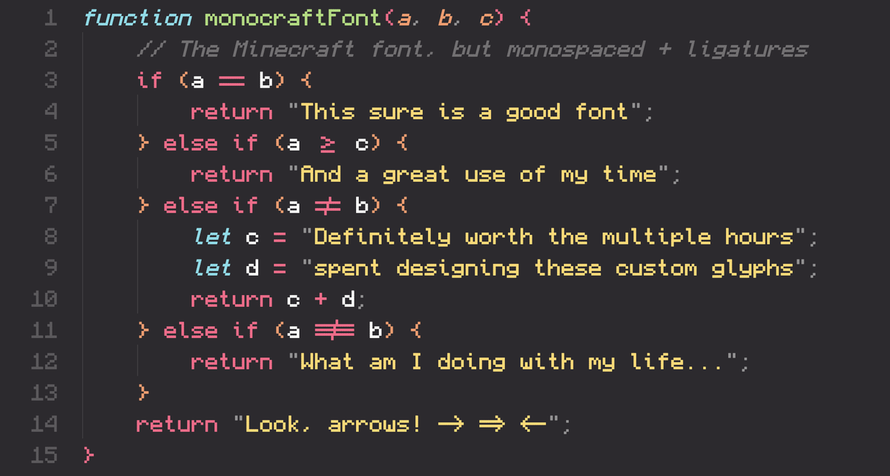

@wsl8297 这个字体不好，他妈的有半个像素这种东西它它它他妈的都不是...你看看他的f 他妈的都不跟其他的字对齐我靠了
这种等宽MC字体文件我倒没有找到，不过MC材质包到有是modrinth上找到的我改了改写命令方块的时候极度舒适。

这种等宽MC字体文件我倒没有找到，不过MC材质包到有是modrinth上找到的我改了改写命令方块的时候极度舒适。

在 GitHub 上挖到一款免费开源字体：Monocraft，把 Minecraft UI 的像素美学做成了真正好用的等宽编程字体。
它收录 1500+ 个精修字符，逐个针对等宽排版优化，让代码行列更齐、视觉更干净。
更惊喜的是还支持编程连字：箭头、比较运算符等符号会以更直观的形态呈现，读起来更顺。 https://t.co/lr8WwOo7WV
它收录 1500+ 个精修字符，逐个针对等宽排版优化，让代码行列更齐、视觉更干净。
更惊喜的是还支持编程连字：箭头、比较运算符等符号会以更直观的形态呈现，读起来更顺。 https://t.co/lr8WwOo7WV